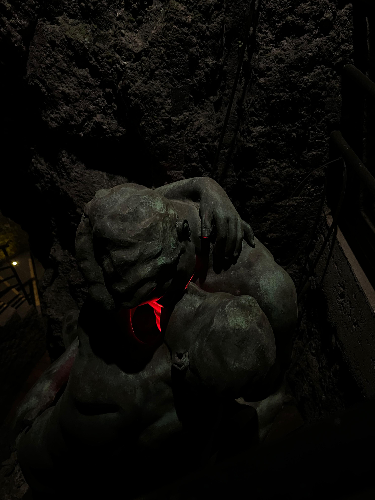
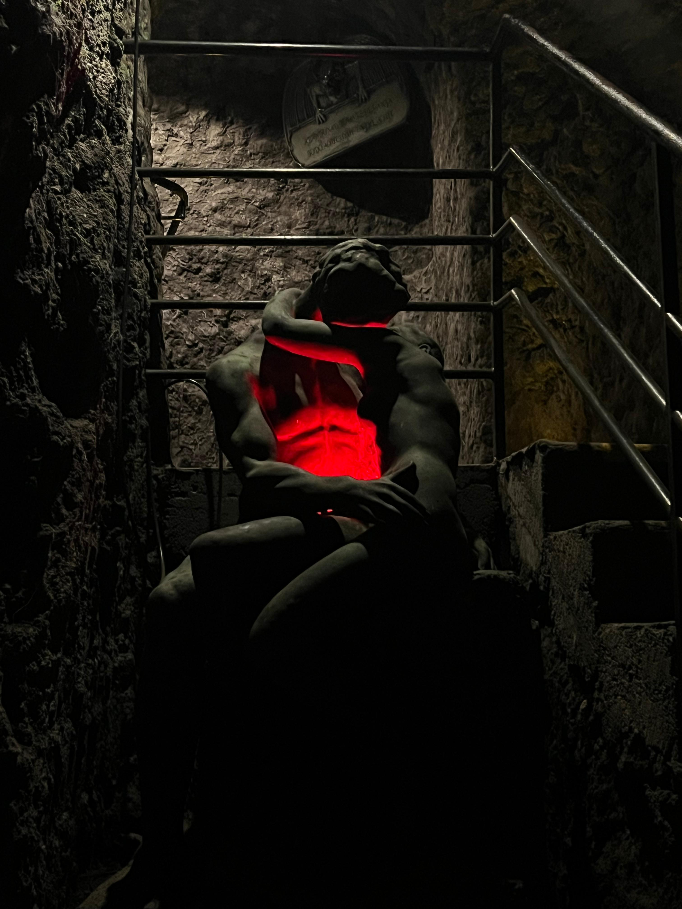
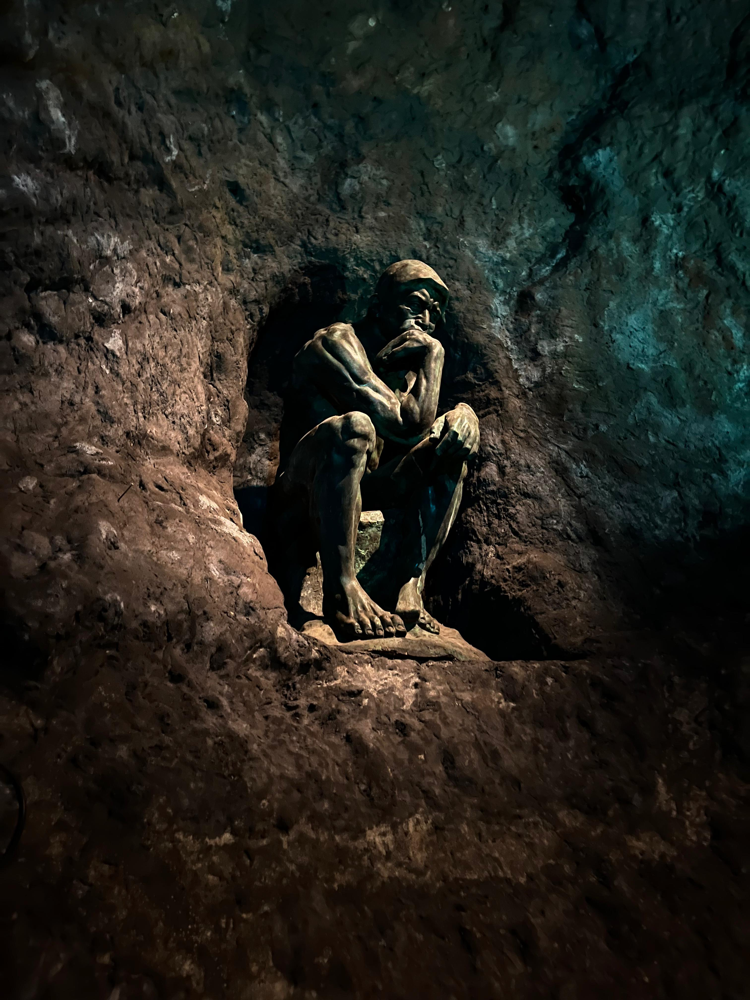

El infierno de Dante
✦ . ⁺ . ✦ . ⁺ . ✦
"El Infierno" es la primera parte de la Divina Comedia, una obra escrita por el poeta italiano Dante Alighieri en el siglo XIV.
Esta epopeya se considera una de las obras maestras de la literatura universal y está compuesta por tres partes: Infierno,
Purgatorio y Paraíso. Cada una describe un viaje simbólico del alma hacia Dios.
Contexto
✦ . ⁺ . ✦ . ⁺ . ✦
Dante escribió la obra entre 1304 y 1321. Aunque fue escrita en lengua vulgar (italiano toscano) en lugar
del latín, lo cual era inusual para la época, tuvo una enorme influencia en la literatura occidental.
La Divina Comedia refleja el pensamiento medieval, combinando elementos cristianos con filosofía clásica.
Estructura de el infierno
✦ . ⁺ . ✦ . ⁺ . ✦
En El Infierno, Dante narra su viaje imaginario a través del infierno guiado por el poeta romano Virgilio. El infierno está
representado como un enorme embudo subterráneo dividido en nueve círculos, cada uno destinado a un tipo específico de pecado y
castigo:
Primer círculo (Limbo)
✦ . ⁺ . ✦ . ⁺ . ✦
En el limbo se encuentran los no bautizados y los paganos virtuosos quienes, pese a no ser pecadores, no conocieron a Cristo.
Estos pecadores no son efectivamente atormentados, pero aun así están condenados ya que están separados de Dios, sin esperanza
de reconciliarse con él
Segundo círculo (Lujuria)
✦ . ⁺ . ✦ . ⁺ . ✦
En el segundo círculo del Infierno se encuentran aquellos que han pecado de lujuria. Dante condena a estos «malefactores carnales»
por dejar que sus apetitos sobrepasaran su razón. Ellos son los primeros en ser verdaderamente castigados en el Infierno
Tercer círculo (Gula)
✦ . ⁺ . ✦ . ⁺ . ✦
Recobrando el sentido, el poeta se halla en el tercer círculo, donde se castiga a los condenados por el pecado de la gula con la
pena de ser batidos por una fortísima lluvia fría mezclada con grueso granizo, y ensordecido por los terribles ladridos de Cerbero,
que además los desgarra con uñas y dientes. Entre esos infelices encuentra a Ciacco.
Cuarto círculo (Avaricia y Prodigalidad)
✦ . ⁺ . ✦ . ⁺ . ✦
Aquellos cuya actitud hacia los bienes materiales se desvió de la media inadecuada son castigados en el cuarto círculo.
Aquí están condenados los avaros, que acumularon posesiones, y los pródigos, que las derrocharon. Ambos grupos empujan grandes
pesos a lo largo del círculo, pero cada uno en dirección opuesta. Cuando se encuentran, chocando, se injurian. Unos reprochan:
«¿Por qué acaparas?», los otros: «¿Por qué derrochas?». A continuación cada grupo da la vuelta para recorrer el círculo en
sentido contrario, hasta chocar de nuevo con el otro.
Quinto círculo (Ira y pereza)
✦ . ⁺ . ✦ . ⁺ . ✦
Las almas de los iracundos están encenagadas en la espantosa y pantanosa laguna Estigia. Rabiosas, se golpean entre ellas, y se
despedazan a mordiscos mientras se ahogan en sus infectas aguas. Bajo el agua y hundidos en el lodo, están las almas de los
acidiosos.
Sexto círculo (Herejía)
✦ . ⁺ . ✦ . ⁺ . ✦
En el sexto círculo, los epicúreos, quienes negaron en vida la inmortalidad del alma, están condenados a yacer en flamígeros
sepulcros destapados. Dante habla con un epicúreo florentino, Farinata degli Uberti, un gibelino amigo de Dante y poeta.
Las afiliaciones políticas de estos dos hombres crean una discusión sobre la política florentina
En respuesta a una pregunta de Dante sobre la profecía que recibió, Farinata explica que el alma en el Infierno puede ver
el futuro pero no el presente. En consecuencia, cuando «se aproximan o son», es todo en vano su intelecto.
Séptimo círculo (Violencia)
✦ . ⁺ . ✦ . ⁺ . ✦
Anillo exterior:
Se castiga a quienes se dejaron llevar por la violencia contra el prójimo (los asesinos y tiranos), hundidos
en el río de sangre hirviente llamado Flegetonte, vigilados por los centauros armados de arcos y flechas.
Anillo del medio:
En este anillo están los suicidas (los violentos contra sí mismos) quienes, transformados en
nudosos árboles, son picoteados y desgarrados por Harpías que anidan allí. Llegado el día del Juicio Final,
esta clase de almas, en vez de revestirse con sus cuerpos al recobrarlos, los colgarán de sus ramas,
pues sería injusto volver a tener lo que uno se ha quitado voluntariamente.
Anillo interior:
Aquí están los violentos contra Dios (blasfemadores) y los violentos contra la naturaleza
(sodomitas y, como se explicó en el sexto círculo, los usureros), quienes están en un desierto ardiente de
arena con una lluvia de llamas. Los blasfemadores están echados en la arena, los usureros sentados y los
sodomitas deambulan en grupos.
Octavo círculo (Fraude)
✦ . ⁺ . ✦ . ⁺ . ✦
En los últimos círculos del Infierno se castigan los pecados relacionados con el fraude consciente o traición.
A estos círculos solo se puede llegar descendiendo un gran acantilado, un monstruo alado tradicionalmente
representado con tres cabezas o con tres cuerpos unidos, pero descrito por Dante con tres distintas
naturalezas: humana, bestial y reptil. Gerión es la imagen del fraude, con la cara que parece de un hombre
honesto, su cuerpo hermosamente coloreado, pero con una punta venenosa en la cola
Noveno círculo (Traición)
✦ . ⁺ . ✦ . ⁺ . ✦
El noveno círculo está rodeado de gigantes clásicos y bíblicos, quienes quizás simbolizan el orgullo y otros
defectos espirituales que se esconden detrás de los actos de traición. Los gigantes están echados en el
suelo y por eso se pueden ver desde más arriba. Entre ellos está Nemrod y Efialtes, quien con su hermano
Otus trató de derrotar al Olimpo. El gigante Anteo está en el pozo que forma el noveno círculo
En el centro del Infierno, condenado por cometer el último pecado (la traición hacia Dios), está Lucifer.
Lucifer es descrito como un gigante, espantosa bestia con tres caras, una roja, una negra y otra de color
amarillo pálido:
✦ . ⁺ . ✦ . ⁺ . ✦
«Una delante y era bermeja,
las otras eran dos, que a aquella se unían
de cada hombro en el medio,
y se juntaban en el lugar de la cresta:
y la derecha parecía entre amarilla y blanca,
la izquierda a la vista era tal cuales son
los que vienen de donde el Nilo se encauza.»
✦ . ⁺ . ✦ . ⁺ . ✦
Los dos poetas salen del Infierno escalando sobre Lucifer, pasando a través del centro de la tierra (con un cambio
del sentido de la gravedad), y emergen en el otro hemisferio (descrito en el Purgatorio) justo antes del amanecer
en Pascua, bajo un cielo lleno de estrellas
 
✦ . ⁺ . ✦ . ⁺ . ✦
«Es por mí que se va a la ciudad del llanto, es por mí que se va al dolor eterno y
al lugar donde sufre la raza condenada,
yo fui creado por el poder divino, la suprema sabiduría y el primer amor,
y no hubo nada que existiera antes que yo,
abandona la esperanza si entras aquí».